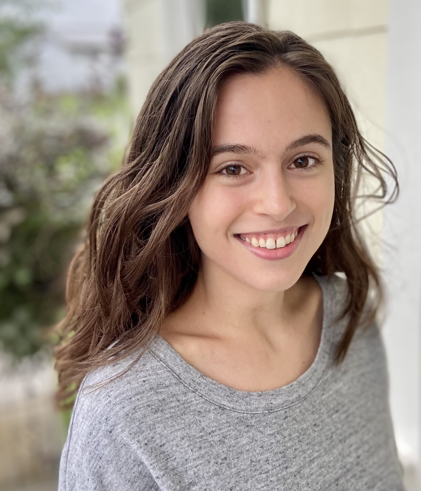

I am an aspiring science journalist and science writer! I am pursuing a Bachelor's degree in Journalism with a minor in Science, Technology, Ethics and Policy, at the University of Maryland. I am especially interested in neuroscience, cognitive science, microbiology, and public health. That said, I enjoy learning and communicating about anything that is important to people and communities.
I also have a deep appreciation for the arts and how they connect people. I seek opportunities to grow as a performing artist and dancer.
Altogether, I am driven by persistent curiosity about the world and a genuine love of learning.
Work Experience
The Y of Central Maryland, 2021-2023
Counselor, Hashawha Y Camp
Staff Lead, Hill Y Teen Leaders Club
Led program, including athletics, team building, discussions, and service projects, to help teens ages 14-18 develop leadership skills and confidence.
Full-Time Science Activity Lead, Hill Y Summer Camp
Led all science learning activities for youth ages 5-12. Tailored activities to each age group to optimize learning engagement.
New Music DC Conference, 2019
Modern Dancer & Performing Artist
Volunteer & Leadership Experience
UMD College of Computer, Mathematical, and Natural Sciences (CMNS) News Site, 2024-present
Individual Contributor
WMUC, Student-Run Radio, 2024-present
Individual Contributor
Camp Kesem (supporting children of parents with cancer), 2023-present
Volunteer
Girls on the Run of Central Maryland, 2022-2023
Head Coach
Disability Support at Carroll Community College, 2022
Student Panelist
Ignite Carroll, 2021
Speaker on Neurodivergence
Education
B.A., Journalism, expected May 2026
University of Maryland College Park
Minor: Science, Technology, Ethics & Policy
Associate of Arts & Sciences, 2023
Carroll Community College
School of International Affairs, 2018
Georgetown University
Associations
National Association of Science Writers
Online News Association
Tau Sigma National Honor Society
Phi Theta Kappa Honor Society
Delta Alpha Pi Honor Society